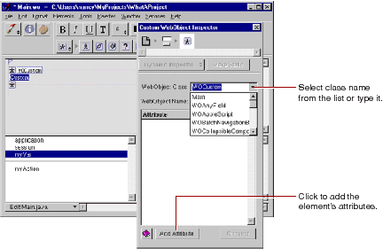

Table of Contents
Table of Contents  Next Section
Table of Contents
Next Section
Table of Contents  Previous Section
Previous Section
A template for a custom WebObject appears at the insertion point.

The WebObject Class combo box allows you to type the class name or select it from the components listed in the pop-up menu. This menu lists all components that are in the current project and frameworks. For example, the components listed in the menu above (WOSimpleArrayDisplay, WOSortOrder, and so forth) are defined in the WOExtensions framework, which is included in your project by default.
If WebObjects Builder recognizes the element class, it automatically displays its attributes. Otherwise, you can add them by clicking Add Attribute.
Table of Contents Next Section